BA Inhaltsanalyse
Parasoziale Beziehungen im Zeitverlauf: (Computergestützte) Inhaltsanalyse von parasozialen Beziehungen auf YouTube
Johannes Gutenberg-Universität Mainz
BA Inhaltsanalyse: Inhalte öffentlicher Kommunikation KF G
Wintersemester 2024/2025
Willkommen!
- Sie können horizontal durch die Sitzungen und vertikal innerhalb der Sitzungen navigieren
- Verwenden Sie die Pfeiltasten
- Verwenden Sie “M”, um das Menü zu öffnen
- Die Kurs-Website und alle Folien finden Sie unter https://felixdidi.github.io/24-2-ia
- Drücken Sie
?auf Ihrer Tastatur, um mehr darüber zu erfahren, wie Sie durch die Folien navigieren können!
Sitzung 01: Einführung
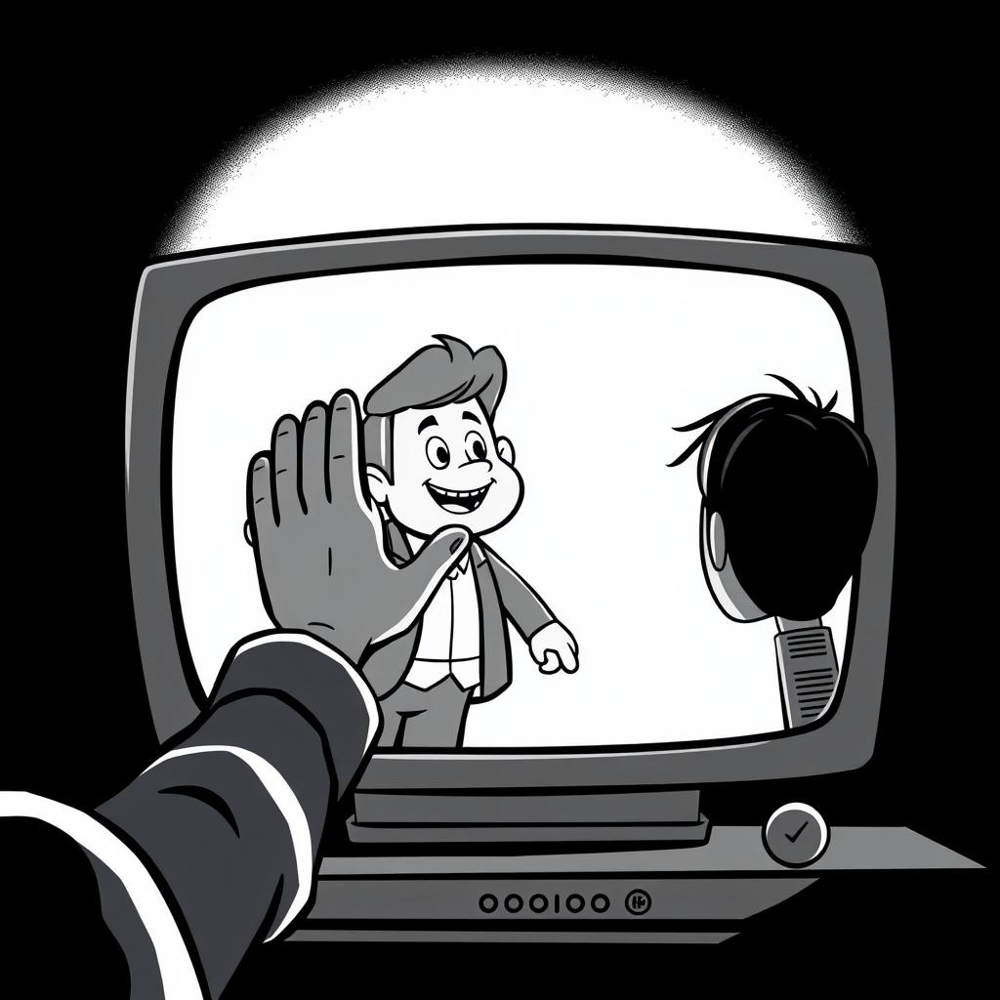
Ressourcen für diese Sitzung
https://felixdidi.github.io/24-2-ia/
Krippendorff (2018); Neuendorf (2017); Oehmer-Pedrazzi et al. (2023); Rössler (2017);
Das Genre “Family-Vlog”
4 Mio. Aufrufe; 6,6 Mio. Abonnenten
“You guys don’t know how much you mean to my daughter. You guys are so special and so amazing and I hope you guys know how many little people you make so happy. My daughter will forever know what family is because of you guys! Please shout out my daughter Haylee Heidt from Saskatoon Saskatchewan. She is 12 and in grade 6”
“I love you Titus and I love you right away I love all of you guys and your dad and mum ❤️”
- Haben Sie schonmal ein ähnliches Video geschaut?
- Was denken Sie: Warum schauen Menschen sich so etwas an?
Los geht’s!
Welche sind die wichtigsten Fragen, die in dieser Sitzung beantwortet werden sollen?
- Worum geht es in diesem Kurs?
- Was werde ich lernen?
- Was werde ich tun (müssen)?
Kurs-Website
- Verfügbar unter https://felixdidi.github.io/24-2-ia
- Bitte nach dieser Sitzung im Detail ansehen
Kursmaterial
- Wird über die Kurs-Website (und Moodle) bereitgestellt
- Bitte prüfen Sie, ob Sie Zugang zur Moodle-Plattform haben
- Sie sollten automatisch zum Moodle-Kurs hinzugefügt werden
- Wenn Sie bis Ende dieser Woche keinen Zugang haben, schreiben Sie bitte eine E-Mail
Vorstellungsrunde
Über Felix
- Doktorand & wiss. Mitarbeiter
am Fachbereich Medienpsychologie
JGU Mainz
Meine Forschungsinteressen umfassen:
- Rezeption und Wirkung von Unterhaltungsmedien
- Algorithmische Kuratierung von Medieninhalten
- Digitale Autonomie & mentale Gesundheit
- Open & Computational Communication Science
Und Sie?
- Wie ist Ihr Name?
- Was ist Ihr Haupt- und Nebenfach?
- Haben Sie schonmal etwas von PSI/PSB gehört? Wie groß ist Ihr Interesse an computergestützten Analysemethoden?
Seminarübersicht
Theoretische Grundlagen & Empirische Umsetzung
| Datum | Thema |
|---|---|
| 24.10.24 | Einführung & Organisation |
| 31.10.24 | Parasoziale Beziehungen im Zeitverlauf |
| 07.11.24 | Eine Problemstellung entwickeln |
| 14.11.24 | Grundlagen der manuellen Inhaltsanalyse |
| 21.11.24 | Chancen & Risiken automatisierter Methoden |
| 28.11.24 | Automatisierte Inhaltsanalyse 1 |
| 05.12.24 | Automatisierte Inhaltsanalyse 2 |
| 12.12.24 | Codebuch & Goldstandard |
| 19.12.24 | Durchführung Inhaltsanalyse |
Seminarübersicht
Auswertung & Aufbereitung
| Datum | Thema |
|---|---|
| 09.01.25 | Datenanalyse 1: Reliabilität und Validität |
| 16.01.25 | Datenanalyse 2: Hypothesentests |
| 23.01.25 | Rezfo 2025 (Keine Sitzung) |
| 30.01.25 | Datenanalyse 3: Ergebnisaufbereitung |
| 06.02.25 | Semesterabschluss und Informationen zum Projektbericht |
| 17.03.25 | Einreichungsfrist für Hausarbeiten |
Hinweis: Die Seminarstruktur kann an die individuellen Bedürfnisse und Interessen der Projektgruppen angepasst werden.
Was werde ich lernen?
Expertise
- Forschung zur digitalen Mediennutzung, Fokus auf parasoziale Phänomene
- Anwendung von Inhaltsanalyse auf Medieninhalte
Methodische Kompetenz
- Entwicklung empirischer Forschungsdesigns zur Inhaltsanalyse (Schwerpunkt Computational Communication Science)
- Durchführung und Dokumentation von Datenanalyse und Reflexion der methodischen Grenzen
Persönliche Kompetenz
- Problemlösungskompetenz bei forschungsorientierten Aufgaben
- Übertragung des Wissens auf ähnliche Fragestellungen
Was muss ich tun?
Seminar-Sitzungen
- Nehmen Sie an den Seminar-Sitzungen teil
Leseaufgabe (siehe “Vorbereitung” im Seminarplan)
- Lesen Sie die bereitgestellte Literatur, um sich auf eine Seminar-Sitzung vorzubereiten
- Orientieren Sie sich bei der Lektüre an den Fragen, die am Ende der letzten Sitzung gestellt wurden
- Sie sollten in der Lage sein, diese Fragen in der Sitzung zu beantworten
Wie man liest und wie man nicht lesen sollte?
- Lesen Sie wissenschaftliche Literatur nicht wie einen Roman
- Beginnen Sie mit Titel, Zusammenfassung und Zwischenüberschriften, um einen ersten Eindruck zu gewinnen
- Wenn Sie digital lesen, suchen Sie nach Schlüsselwörtern
- Überlegen Sie: “Was will ich von diesem Text?”
- Beantworten Sie Ihre eigenen Fragen (ich werde auch einige stellen)
Was muss ich tun?
Arbeit in den Arbeitsgruppen
- Gruppenarbeit im Seminar: ca. 5 Studierende pro Gruppe
- Maximal 5 Arbeitsgruppen im Seminar
- Prinzip: “Learning by doing”
- Studierende sammeln praktische Erfahrungen in Arbeitsgruppen (AGs)
- Austausch mit anderen AGs: Kennenlernen von Methoden, Themen und Arbeitsweisen
- Feedback geben und erhalten: zur eigenen und zu anderer AG-Arbeit
Präsentation des Projektfortschritts (nicht benotet)
- Wöchentliche Gruppensitzungen während des Seminartermins
- Fester Bestandteil: 5-Minuten-Gruppenbericht, präsentiert von einem Gruppenmitglied
- Jedes Mitglied präsentiert im Laufe des Seminars einmal
- Nach jedem Bericht: Feedbackrunde (Gruppe und Seminarteilnehmer)
- Alternative Sitzungen: offene Arbeitssitzung oder Sprechstunde
- Weitere Infos zur Gruppenarbeit: siehe Aufgabe Woche 1
Was muss ich tun?
Abgabe von Methodenübungen (nicht benotet)
In der Gruppe:
- Allgemeine Aufgaben für alle Gruppen: in der Spalte “Aufgaben” der Seminarübersicht
- Müssen i.d.R. nicht abgegeben werden
- Orientieren sich am Fortschritt der Gruppenarbeit
Individuell:
- Insgesamt drei “Hausaufgaben” zu Methodenübungen
- Abgabe der R-Datei via Moodle
- Weitere Informationen in den entsprechenden Sitzungen
Was muss ich tun?
Benotete Leistung (“Prüfungsleistung”)
- Informationen auf der Kurswebsite & in der letzten Sitzung
Allgemeine Literatur


Soweit Fragen?
Gruppenbildung
Siehe Aufgabe 1
Vorbereitung auf die kommende Sitzung
Siehe Vorbereitung Sitzung 2
Sitzung 02: Parasoziale Beziehungen im Zeitverlauf
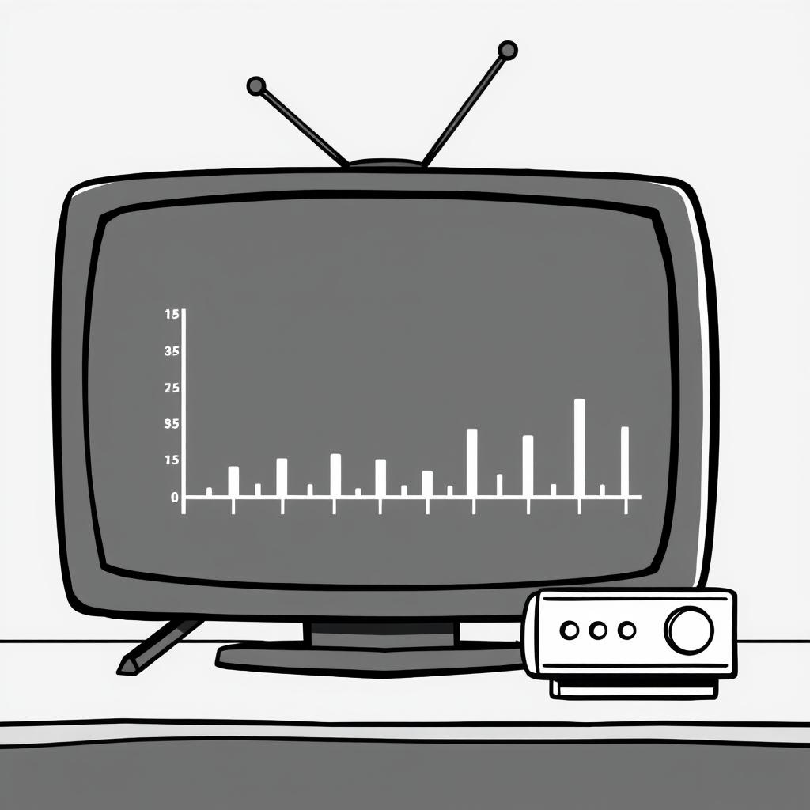
Unterhaltungserleben: Klassische Definition
In der kommunikationswissenschaftlichen Unterhaltungsforschung wird Medienunterhaltung meist als Rezeptionsphänomen definiert:
Unterhaltung ist, was Rezipienten als unterhaltsam wahrnehmen
Bosshart & Macconi (1998)
Traditionell wird das Unterhaltungserleben als angenehmer und positiver Erlebenszustand beschrieben:
“enjoyment typically has been defined using terms associated with pleasure and measured as a positive emotional reaction to content”
Raney & Bryant (2019, S. 324)
Die klassischen Definitionen des Unterhaltungserlebens nehmen somit eine rein hedonische Sichtweise ein: Unterhaltungserleben ist das reine Vergnügen an der Medienrezeption
Problem: Die rein hedonische Perspektive klassischer Unterhaltungstheorien vernachlässigt die Rezeption von Stimuli, die zunächst zu aversiven Reaktionen führen
Aktuelle Ansätze zum Unterhaltungserleben: Zwei-Prozess-Modelle
Neuere Zwei-Prozess-Modelle des Unterhaltungserlebens berücksichtigen auch die non-hedonische Seite der Medienunterhaltung
- Menschen streben nicht (nur) nach hedonischem Glück, sondern nach psychologischem Wachstum (Self-Determination Theory, Ryan & Deci, 2000)
- Grundlegende psych. Bedürfnisse:
- Kompetenz
- Autonomie
- Soziale Verbundenheit
- Mediennutzung orientiert sich an diesen Bedürfnissen (bspw. Tamborini et al., 2011)
- Statt Streben nach Unterhaltung, Suche nach “Meaningful Entertainment” (Oliver & Raney, 2011)
- Form des Genusses von Medien auf höherer kognitiver Ebene
- Wird empfunden bei:
- Moralischer/ästhetischer Schönheit
- Erinnerung an die eigene Endlichkeit und den Sinn des Lebens
Warum forschen wir dazu?
Psychologisches Wohlbefinden
“Optimal psychological functioning and experience”
Ryan & Deci (2001, p. 142)
- Fokus auf Glück und Lebenszufriedenheit
- Erreichen von Freude (positiver Affekt)
- Schmerzvermeidung (Vermeidung von negativem Affekt)
- Manchmal auch subjektives Wohlbefinden genannt
- Fokus auf volle Funktionsfähigkeit
- Bedeutsamkeit / Sinn (Meaning)
- Selbstverwirklichung
Zwei-Kontinua-Modelle der psychischen Gesundheit
im Zusammenhang mit computervermittelter Kommunikation, siehe Meier & Reinecke (2021)
- Psychische Erkrankung
- Persönliches Leiden
- Beeinträchtigung der Lebensfunktionen
- Dysfunktion
- Glück und Lebenszufriedenheit
- Persönliches Wachstum
- Entfaltung und Lebensqualität
Besprechung der Literatur
- Wie entstehen PSBs?
- Was sind potentielle Prädiktoren für die Intensität von PSBs?
- Was meint Leith mit “verbal immediacy”? Notieren Sie sich Fragen zu möglichen Unklarheiten
- Was sind potentielle Unterschiede bei PSI und PSB zu Social-Media-Persönlichkeiten im Vergleich zu TV-Personae (z.B. Charaktere in einem Film oder Nachrichtensprecher:innen)
- Überlegen Sie sich, inwiefern das alles auf das Anwendungsbeispiel der Family-Vlogs zutreffen kann
Parasoziale Phänomene
- Das Konzept der parasozialen Interaktion (PSI) geht zurück auf Horton & Wohl (1956)
- In ihrer Forschung über die Rezeption von Fernsehmoderatoren stellten sie fest, dass diese oft die Illusion einer direkten Interaktion mit dem Publikum vermitteln
- Das Fernsehen hat keinen Rückkanal, parasoziale Interaktionen stellen “Schein”-Beziehungen zwischen Mediennutzer:innen und Persona dar
- Es besteht eine “wahrgenommene Reziprozität” zwischen Mediennutzer:innen und Persona
- PSI entsteht durch automatisierte Prozesse der sozialen Wahrnehmung:
- Wir kategorisieren unwillkürlich alle Objekte in unserer Umgebung in unbelebte Dinge und soziale Akteure
- Medienpersonae werden als soziale Akteure kategorisiert und behandelt, obwohl eine direkte Interaktion mit ihnen nicht möglich ist
- siehe auch Hartmann & Goldhoorn (2011), Rubin et al. (1985)
Von der PSI zur PSB
- Eine Reihe von Einflussfaktoren bestimmen die Stärke der PSI, z.B.:
- die Obtrusivität der Persona, d.h. ihre Medienpräsenz oder Aufdringlichkeit
- die Persistenz der Persona, d. h. die Dauer und Häufigkeit ihres Auftretens
- die direkte Ansprache der Mediennutzer:in durch die Persona
- Die Attraktivität der Persona
- der Grad des Anthropomorphismus (Menschenähnlichkeit) der Persona und ihre Realitätsnähe (z.B. menschlich vs. außerirdisch)
- Aus PSI können sich im Laufe der Zeit parasoziale Beziehungen (PSB) entwickeln, die längerfristige Bindungen zu einer Persona beschreiben
- Parasoziale Beziehungen stellen in der Regel keine innigen Freundschaften dar und leisten für die Mehrheit der Rezipienten keinen Ersatz für reale Beziehungen
- siehe z.B. Tukachinsky & Stever (2019), Walter et al. (2023)
Verbal Immediacy
“Past studies have also found that NLP tools like LIWC can identify and score messages for language that conveys closeness and immediacy (Borelli et al., 2011; Pennebaker & King, 1999). Namely, verbal immediacy scores increased in closer relationships (Cegala, 1989) and decreased when individuals were less involved (Borelli et al., 2011; Cohn et al., 2004).”
Leith (2021, S. 116)
“Bazarova et al. (2013) used LIWC to score the verbal immediacy of close friends on Facebook in comparison to strangers. They found that verbal immediacy correlated with partner familiarity. Public messages to friends had a greater verbal immediacy score than the public messages to strangers . . . It is therefore expected that the messages to a PSR partner are more like the messages to a friend than a stranger.”
Leith (2021, S. 120)
Verbal Immediacy
“The LIWC score for verbal immediacy is the arithmetic mean for first-person singular pronouns, present focus, discrepancies, words greater than six letters, and articles, with the last two scores being inversely scored”
Leith (2021, S. 120)
Sitzung 03: Eine Problemstellung entwickeln
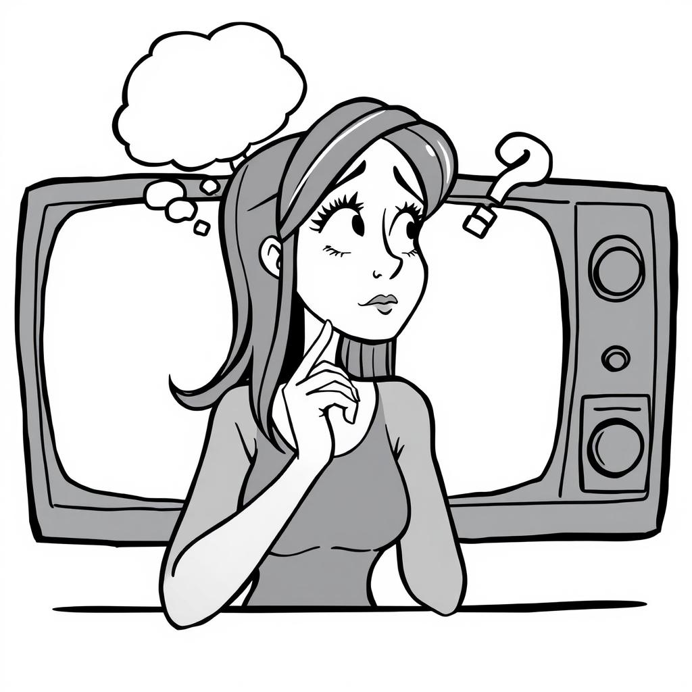
Ressourcen für diese Sitzung
Döring (2022)
Mögliche Diskussionspunkte
- Inwiefern bilden sich die von Ihnen genannten Konstrukte in Medieninhalt ab (z.B. Nutzer:innenkommentare, bildlich oder textuell im Video)? Wie implizit oder explizit ist das Konstrukt in diesen Inhalten vorhanden?
- z.B. Übertragung normativer Fragen (Ethik) auf empirisch messbare Dimensionen
- z.B. Emotionales Empfinden → Ausdrucksformen
- Inwiefern lassen sich diese Fragestellungen auch in anderen Nutzungskontexten untersuchen?
- z.B. Fernsehen (nur Inhalte, keine Nutzer:innenreaktionen)
- z.B. Podcasts
- siehe auch zukünftige Sitzung zu Datenerhebung
- Welche Limitationen könnte ein inhaltsbasierter Ansatz haben, und wie können wir diese möglichst gering halten?
Sitzung 04: Grundlagen der manuellen Inhaltsanalyse
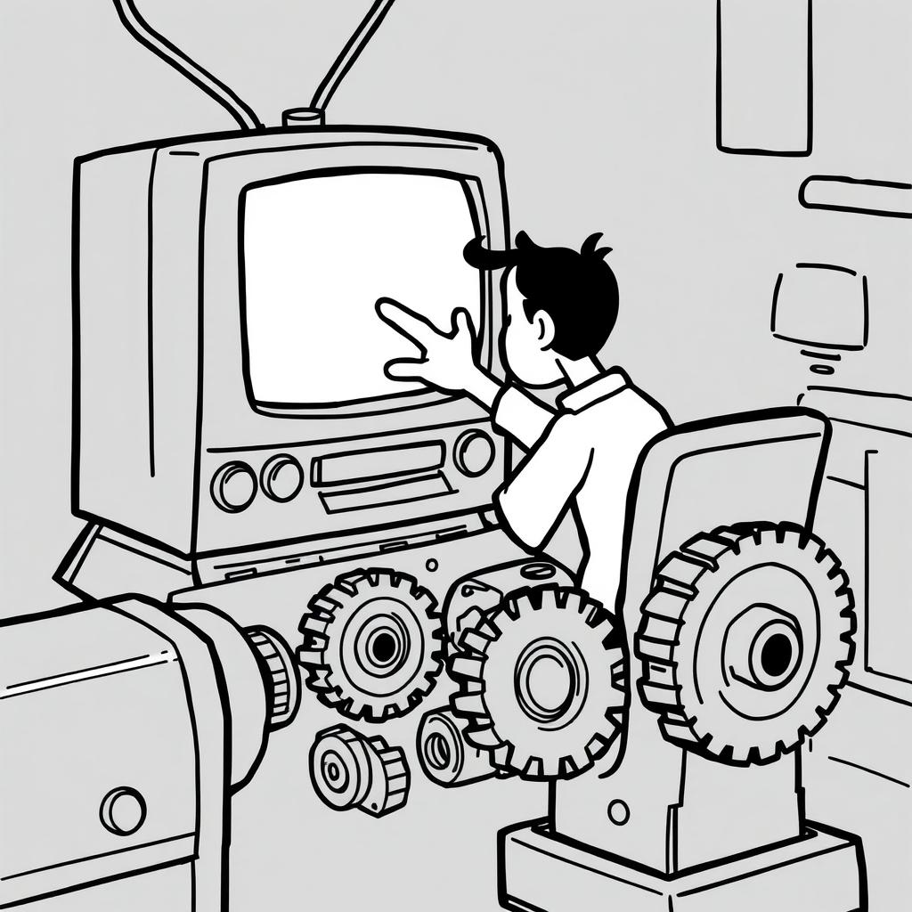
Sozialwissenschaftliche Methoden
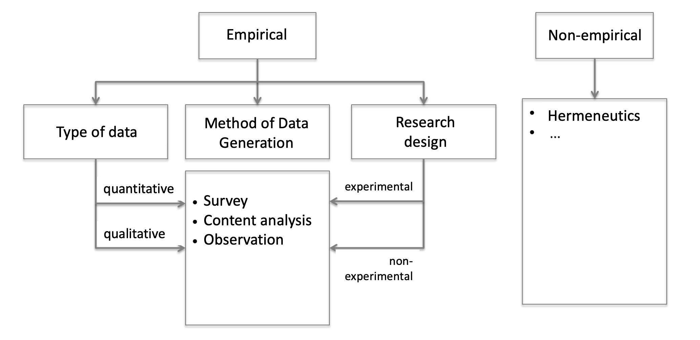
Definition der Inhaltsanalyse
“Content analysis is a research technique for the objective, systematic, and quantitative description of the manifest content of communication.”
Berelson (1952, p. 18)
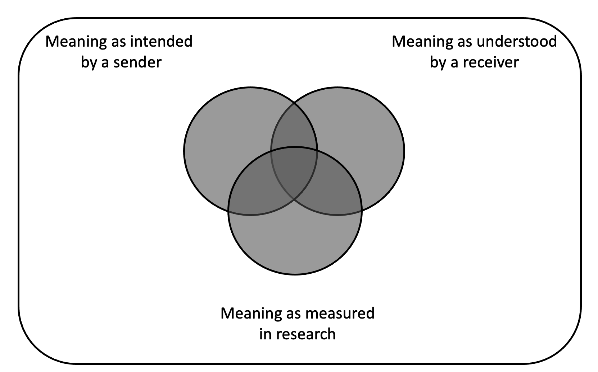
Gibt es ein Problem mit diesem Tweet?
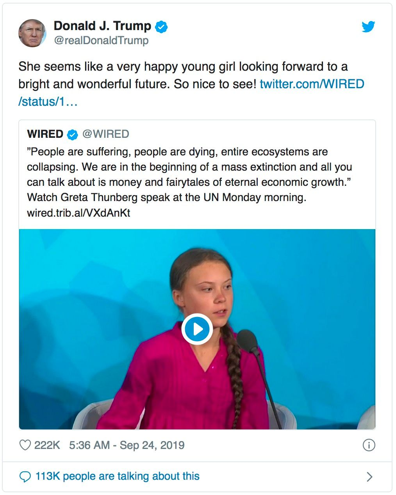
Manifester vs. latenter Inhalt
- Manifest: Elemente, die physisch vorhanden und zählbar sind
- Latent: Konstrukte, die nicht direkt gemessen werden können
- Messung durch die Bewertung der Codierer:in…
- …oder mehrere manifeste Indikatoren
“Content analysis is a research technique for making replicable and valid inferences from texts (or other meaningful matter) to the contexts of their use.”
Krippendorff (2018, p. 18)
“Content analysis is a summarizing, quantitative analysis of messages that follows the standards of the scientific method (including attention to objectivity–intersubjectivity, a priori design, reliability, validity, generalizability, replicability, and hypothesis testing based on theory) and is not limited as to the types of variables that may be measured or the context in which the messages are created or presented.”
Neuendorf (2017, p. 17)
Die Mythen der Inhaltsanalyse
- Die Inhaltsanalyse beschränkt sich auf einfache Analysen
- Jeder kann eine Inhaltsanalyse durchführen; sie erfordert keine besondere Vorbereitung
- Der Begriff Inhaltsanalyse bezieht sich auf alle Untersuchungen von Nachrichten (z.B. was ist mit “qualitativer Inhaltsanalyse”?)
- Die Inhaltsanalyse ist nur für den akademischen Gebrauch bestimmt
Kann man nur das analysieren, was “im” Text ist? (wie der Inhalt eines Containers)
“The term ‘content’ in content analysis is something of a misnomer because verbal materials may be examined for content, for form (e.g., style, structure), function, or sequence of communications”
Smith (2000, p. 314)
Ziele der Inhaltsanalyse
- Beschreibung des Nachrichteninhalts
- im Allgemeinen nicht problematisch - aber siehe Problem latenter vs. manifester Inhalt
- z.B. “Inwieweit kommen populistische Kommunikationsstrategien in extremistischen Propagandavideos vor?” (vgl. Schmitt et al., 2018)
- Die Untersuchung der Qualität von Botschaften
- erfordert einen (normativen) Rahmen
- z.B. “Gibt es einen Unterschied zwischen rechtsextremen und islamistischen Propagandavideos in Bezug auf den Einsatz populistischer Kommunikationsstrategien?” (vgl. Schmitt et al., 2018)
- Inferenz
- erfordert zusätzliche Daten oder tiefgreifende theoretische Annahmen
- prognostische Inferenz (z.B. “Welchen Einfluss haben populistische Kommunikationsstrategien in extremistischen Propagandavideos auf die Zuschauer?”)
- diagnostische Inferenz (z.B. “Welche Elemente der Diskursarchitektur fördern die Verwendung bestimmter populistischer Kommunikationsstrategien?”)
Forschungsobjekte
- Private Kommunikation, z.B. Briefe, Privatgespräche, private Nachrichten
- Öffentliche Kommunikation, z.B. öffentliche Reden, Medienberichte von Print-, Online-, TV- und Radiosendern, Protokolle von Parlamentsdebatten, Beiträge in sozialen Medien, Anzeigen, …
- Visuelle Objekte (Fotos, Diagramme usw.) vs. geschriebener Text vs. gesprochener Text (muss vor der Analyse transkribiert werden)
Potenziale der Inhaltsanalyse
- Quantitative Beschreibung von großen Mengen von Nachrichten
- Ermöglicht retrospektive Längsschnittstudien
- Keine Verweigerungen oder Aussteiger
- Nicht-Reaktivität
- Anwendbar auf alle Formen der Kommunikation
Einheiten
- Population: Gesamtheit der Medienbotschaften, über die die Studie Schlussfolgerungen ziehen soll
- Untersuchungseinheiten: Formal definierte Einheiten (im Codebuch), die die Grundlage für eine Analyse bilden, z.B. Zeitungsausgaben, Twitter-Posts von bestimmten Accounts innerhalb eines bestimmten Zeitraums usw.
- Analyseeinheiten: Einheiten, die kodiert werden und auf denen die Ergebnisse beruhen sollen (z.B. Tweets, Artikel, Fotos, Absätze, Sätze, Wörter usw.)
Welche möglichen Analyseeinheiten sehen Sie hier?
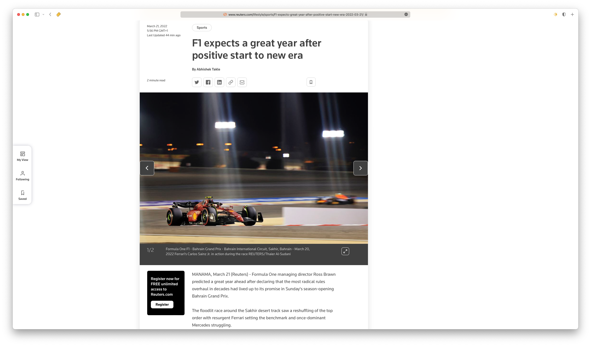
Artikel-Ebene, Absatz-Ebene, Satz-Ebene, Bild-Ebene, Wort-Ebene
Design-Entscheidungen
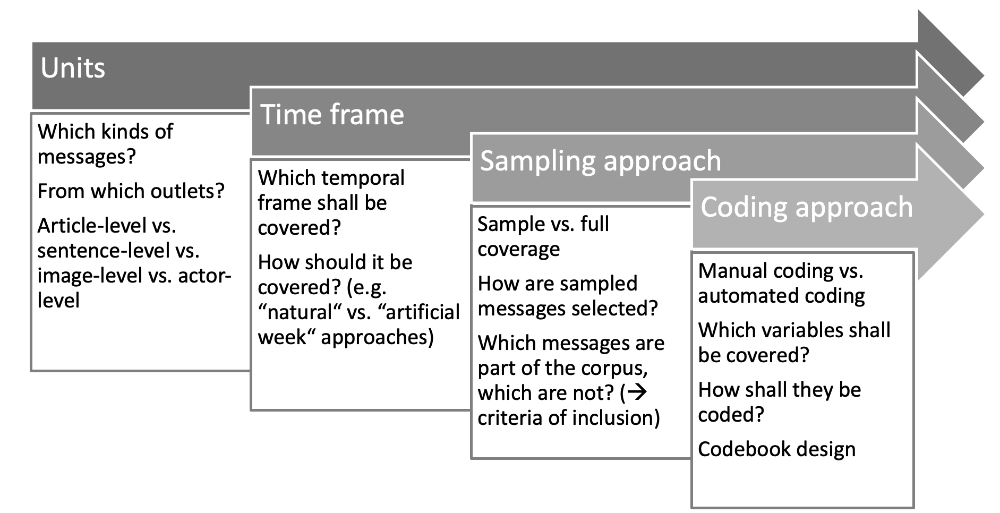Materialien für die manuelle Kodierung
- Codebuch: System von Regeln und Anweisungen für die Auswahl und Kodierung von Nachrichten
- Grundlegende Definitionen von theoretischen Begriffen
- Untersuchungseinheiten und Analyseeinheiten
- Kriterien für die Aufnahme
- System der zu kodierenden Kategorien
- Detaillierte Kodierungsanweisungen
- Kodierschema: Heutzutage typischerweise eine Datendatei im Tabellenformat
- Kodiererschulungen und anschließende Reliabilitätstests
Beispiel für ein Codebuch hier: https://osf.io/2z3dk/
Inhaltsanalyse nach den Standards der wissenschaftlichen Methode
“Content analysis is a summarizing, quantitative analysis of messages that follows the standards of the scientific method (including attention to objectivity–intersubjectivity, a priori design, reliability, validity, generalizability, replicability, and hypothesis testing based on theory) and is not limited as to the types of variables that may be measured or the context in which the messages are created or presented.”
Neuendorf (2017, p. 17)
Objektivität-Intersubjektivität
- Objektivität: Vermeidung von Voreingenommenheit des Beobachters
- Aber: Soziale Konstruktion der Wirklichkeit
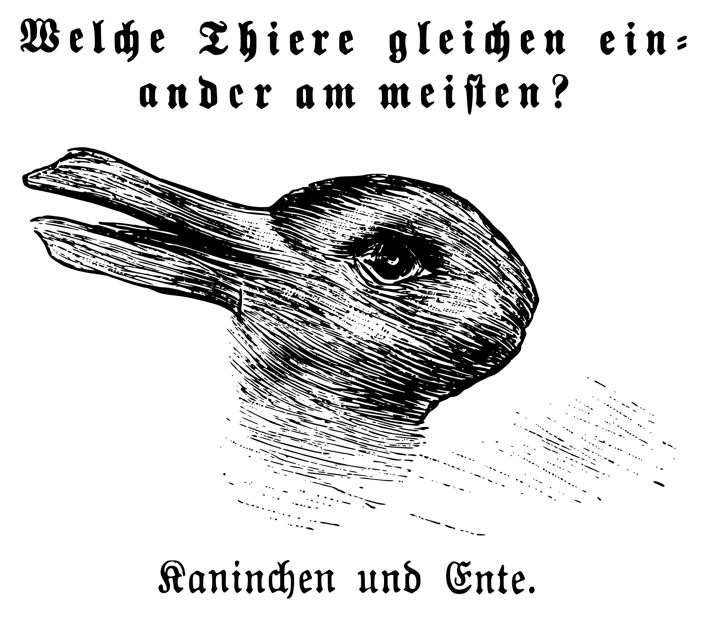
- Nicht: “Ist es wahr?”, sondern “Sind wir uns einig, dass es wahr ist?”.
- Intersubjektivität
A priori design
- Wird bei Inhaltsanalysen oft verletzt
- Alle Entscheidungen müssen getroffen werden, bevor der Messprozess beginnt!
- Variablen
- ihre Messung
- Kodierregeln
- Menschliche Kodierung: das Kodierbuch und das Kodierformular müssen im Voraus erstellt werden
- Automatisierte Kodierung: das Wörterbuch, der Promt, oder ein anderes Kodierungsprotokoll sollte im Voraus erstellt werden
Darüber hinaus…
- Verallgemeinerbarkeit: siehe “The Computational Niche” in der nächsten Sitzung
- Replizierbarkeit: werden wir am Rande besprechen
- Hypothesenprüfung auf der Grundlage von Theorie: gute Problemstellung entwickeln
- Reliabilität und Valdität: Wird in einer eigenen Sitzung behandelt
Fragen?
Die vorliegenden Daten zu Family-Vlogs
- n = 280.427 Kommentare unter
- 2.265 Videos
- aus 13 Kanälen
- MKommentare/Person = 8.00 (SD = 8.68)
- MBeziehungsdauer = 453 Tage
- MAbonnenten/Kanal = 5,07 Mio.
Kanäle
- @travandcor
- @throughryanseyes
- @theedwardsfamily
- @thejohnsonfam
- @onyxfamilyshow
- @thecrosbys
- @louisepentland
- @justjordan33
- @kayceerachelwonderland
- @familiadiamond
- @coleandsav
- @cjsocool
- @bramfam
Sitzung 05: Chancen & Risiken automatisierter Methoden
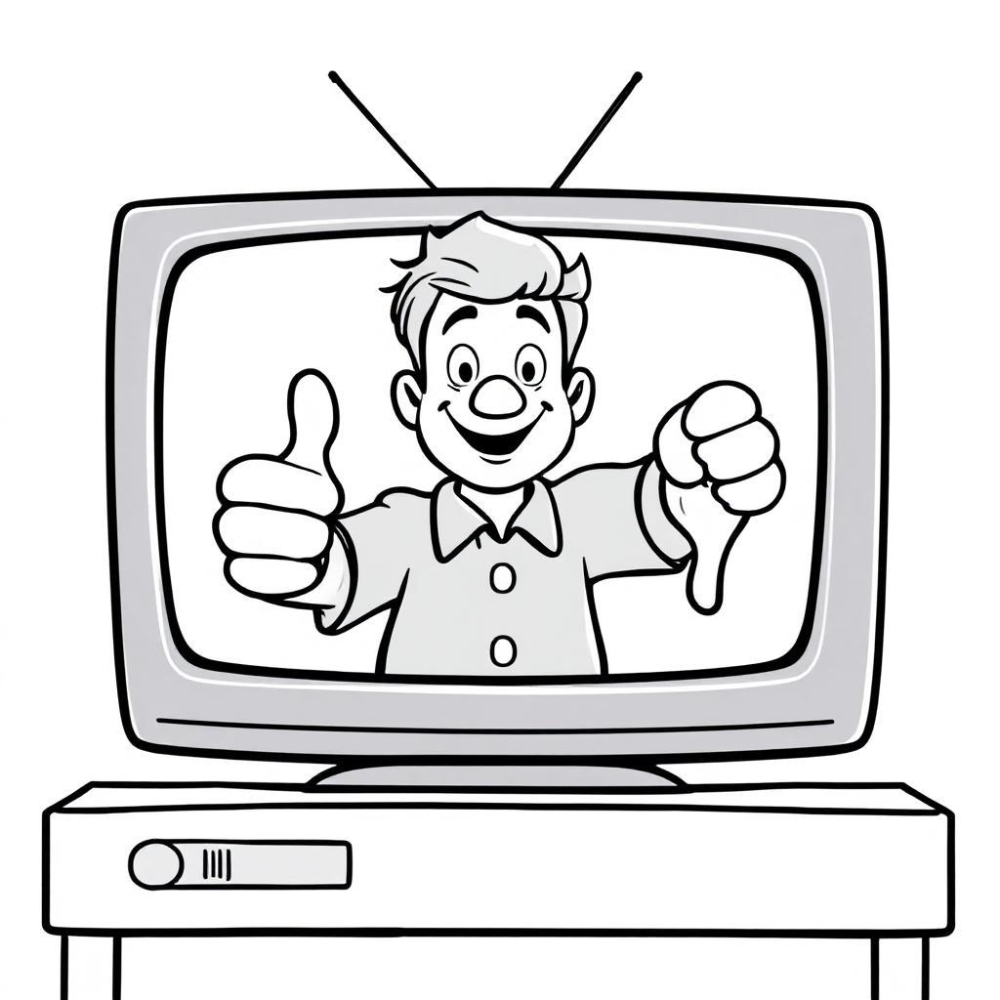
Ressourcen für diese Sitzung
van Atteveldt & Peng (2018)
Chancen, Herausforderungen und Fallstricke der computergestützten Kommunikationswissenschaft
- Wie können Sie die Möglichkeiten von CCS im Hinblick auf Ihr Forschungsinteresse nutzen?
- Wie können Sie mögliche Fallstricke in Bezug auf Ihr Forschungsinteresse vermeiden?
basierend auf van Atteveldt & Peng (2018)
- Vom Selbstbericht zum tatsächlichen Verhalten
- Von Laborexperimenten zu Studien über das echte soziale Umfeld
- Von Small-N zu Large-N
- Von solitärer zu kollaborativer Forschung
- Wie können wir Forschungsdaten zugänglich machen?
- Sind “Big Data” immer gute Daten?
- Sind computergestützte Messmethoden valide und reliabel?
- Was ist verantwortungsvolles und ethisches Vorgehen in der computergestützten Kommunikationsforschung?
- (Wie erhalten wir die erforderlichen Fähigkeiten und Infrastrukturen?)
The Computational Niche
- Wie passt Ihr Forschungsinteresse in die “Computational Niche?
- Wie könnten Sie die von Margolin (2019) vorgeschlagenen Empfehlungen umsetzen?
Relationship between comparative advantages (rows) and recommendations (columns)
| Provide Multi-Causal Inventories | Report Informative Findings | Measure Important Variables “As Is” | Use Purposive Samples | |
|---|---|---|---|---|
| Test External Validity | Fully articulate state of prior knowledge | Give “null finding” equal importance | Converts construct validity concerns to evaluations of theoretical boundary conditions | Guides field to deploy systematic, controlled variation across studies |
| Explore Theoretical Relevance | Identify when prior expectations are weak for relevant variables | Identifies theories that do and do not explain real world phenomena | ||
| Audition Hypotheses for Field | Provide all hypotheses that fit the data | Show that an effect holds in a specific, defined, sub-group and so may be generalizable | ||
| Create Unimaginable Hypotheses | Researchers must go beyond “most intuitive” explanation and acknowledge competing alternatives | Encourages theoretical interrogation of unexpected predictors | Reduce reliance on face valid comparisons that disguise counterintuitive differences |
Sinnvolle Fragen stellen
basierend auf Jungherr & Theocharis (2017)
- Nutzung neuer Daten, um bestehende Theorien zu überprüfen, aber vor allem, um neue Theorien zu entwickeln, die auf neuen Erkenntnissen beruhen, die mit den bisherigen Forschungsinstrumenten nicht hätten gewonnen werden können
- Entwicklung neuer Konzepte und Messmethoden, die uns in Kombination dabei helfen können, besser zu verstehen, wie die von dieser neuen Datenquelle erfassten Einstellungen und Verhaltensweisen nicht nur auf größere Phänomene, sondern auch auf unser bestehendes Verständnis abgebildet werden, wodurch klarer wird, welche Schlüsse wir bei der Untersuchung komplexer sozialer und politischer Prozesse ziehen können - und welche nicht.
- Unsere erkenntnistheoretischen Instrumente und Methoden neu bewerten und durch interdisziplinäre Zusammenarbeit neu abstimmen, so dass sie synergisieren, anstatt miteinander zu konkurrieren
- Sicherstellen, dass das gesamte Forschungsprogramm im Einklang mit wissenschaftlichen Werten, Ethik und Praktiken steht
Fragen?
Sitzung 06: Automatisierte Inhaltsanalyse 1
Datenerhebung
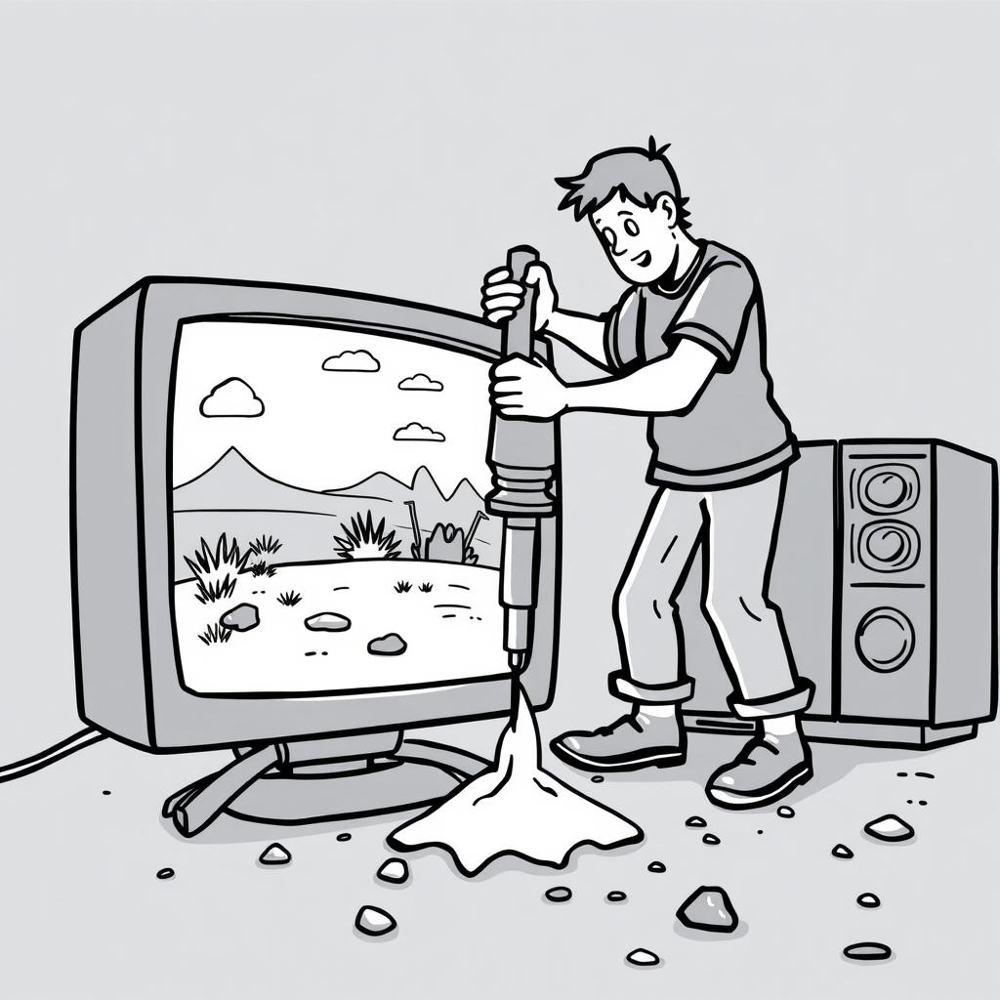
Ressourcen für diese Sitzung
Possler et al. (2019)
Agenda
- Einrichtung von R & RStudio sowie ggf. Python
- Besprechung des Skripts zu automatisierter Datenerhebung
- Übungen
- Überarbeitung Codebuch
Einrichtung & Tech Support
Besprechung: Datenerhebung
Übungen
Überarbeitung Codebuch
Bitte beachten:
- Keine Befragungsstudie, sondern Inhaltsmerkmale!
- Die Frage im Codebuch ist keine Forschungsfrage, sondern instruiert die Codierer:in, Ausprägungen eines Konstrukts zu evaluieren (PSI/PSB). Kann daher alternativ auch als Instruktion formuliert werden
Beispiel “Sentiment-Analyse”
Die allgemeine Stimmung oder Tonalität des Textes soll erfasst werden. Dabei liegt der Fokus nicht auf einzelnen Aussagen oder Passagen, sondern auf der Gesamteinschätzung der Stimmung.
Ausprägungen: 1 = negativ, 2 = neutral, 3 = positiv
Empfohlener Ablauf:
- Den gesamten Text lesen und eine intuitive Einschätzung der Gesamtstimmung vornehmen.
- Den Text ein zweites Mal lesen, dabei gezielt nach positiven und negativen Elementen suchen.
Eigene Meinungen sollten zurückgestellt werden; die Bewertung sollte möglichst objektiv erfolgen und sich darauf konzentrieren, wie der Text insgesamt wirkt.
Überarbeitung Codebuch
Arbeitsauftrag 1
- Mischen Sie sich in den Gruppen so, dass an jedem Tisch mindestens eine Expert:in aus jeder Gruppe ist
- Tragen Sie Ihre Ideen und Vorschläge zusammen
- Diskutieren Sie, was gut funktionieren könnte, was nicht (und warum)
- Nutzen Sie evtl. den Kommentare-Datensatz für Tests
Überarbeitung Codebuch
Arbeitsauftrag 2
- Finden Sie sich wieder in Ihrer Forschungsgruppe zusammen
- Besprechen Sie, was Sie von den Kommiliton:innen gelernt haben
- Überarbeiten Sie das Codebuch entsprechend
Hausaufgaben!
- Individuelle Abgabe einer
.R-Datei mit Ihrem Code zur Lösung der Aufgaben 1-3 zu Datenerhebung (via LMS) - Gruppenabgabe überarbeitetes Codebuch (via Mail)
- Beides bis Dienstag, 03.12., 12 Uhr mittags
Fragen?
Literaturangaben